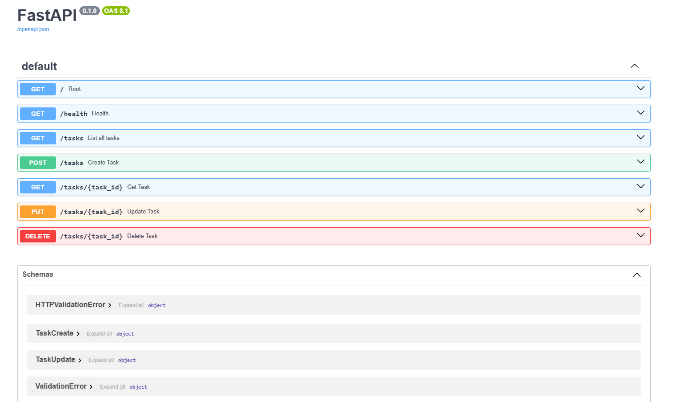

A retrieval-augmented generation pipeline, built solo. Shado retrieves the most
relevant evidence, reranks it before anything reaches the model, and grounds its
answer directly in that evidence rather than guessing. It was awarded Gold at the
Kanz AI Hackathon, a Guinness World Records-associated event with over 13,000
participants.
During an internship at DOO, a customer messaging platform, I worked on project
CNCT: human-handoff detection, smart ticket routing, sentiment analysis, and a
semantic FAQ engine backed by PostgreSQL with pgvector. This case is a production
judgment call rather than a demoable feature, the code is confidential, so it is
described here in place of a screenshot.
A small CRUD API for managing a to-do list, moved across three storage engines
(in-memory, SQLite, then a containerized Postgres server) without ever changing a
route, because every line of SQL lives in one repository module. Auth is handled by
Supabase, this project never hashes a password or signs a token itself. Every query
uses parameterized placeholders, and Postgres data persists in a named Docker volume
across a full teardown and rebuild.
FastAPIPostgreSQLDockerRedisSupabase Auth

Swagger UI, generated automatically by FastAPI from the route definitions.
Research depth behind the engineering: two published papers, positioned here as
supporting evidence rather than the lead. Full abstracts and links live on the
About page.